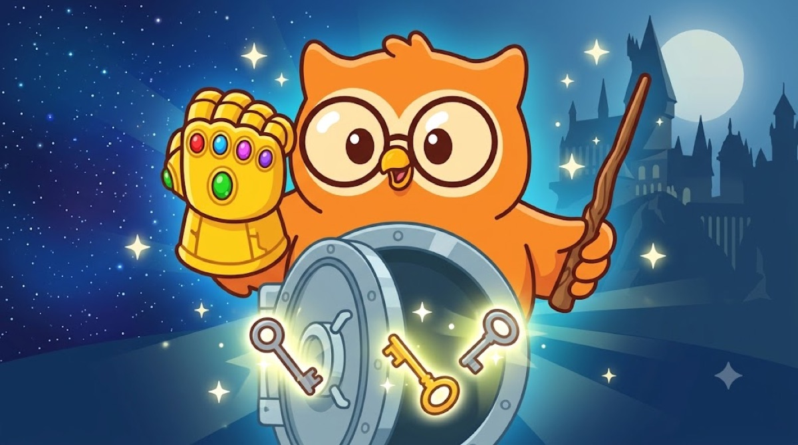

멀티시그 시뮬레이터를 만들고 나서 몇 번 굴려보다가 문득 든 생각인데, 멀티시그 이거 어벤져스랑 해리포터에서 이미 다 본 얘기 아닌가.

멀티시그를 한 줄로 말하면 이렇다. 열쇠를 여러 개 만들고, 그중 몇 개가 모여야 금고가 열리게 하는 것. 2-of-3이면 열쇠 세 개 중 두 개만 있으면 된다. 말로 하면 어려운데, 영화로 보면 쉽다. 타노스와 볼드모트가 둘 다 이걸 했다. 그리고 둘 다 망했다.
타노스: 6개를 전부 모아야 하는 금고
인피니티 건틀렛은 스톤 여섯 개가 다 박혀야 손가락을 튕길 수 있다. 멀티시그로 치면 6-of-6이다. 열쇠 여섯 개가 전부 있어야 열리는 금고.
재밌는 건 지키는 쪽의 배치다. 스톤은 우주 곳곳에 흩어져 있었다. 각기 다른 행성, 다른 관리자, 다른 금고. 내가 멀티시그 글에서 말한 '서로 다른 공급망을 섞어라'를 우주 규모로 해 놓은 셈이다. 공격자가 하나를 털어도 나머지 다섯은 멀쩡하다.
그런데 타노스는 결국 다 모았다. 왜일까. 스톤 하나하나를 지키는 게 사실상 한 명, 한 곳이었기 때문이다. 흩어 놓기만 했지, 각 열쇠마다 2중 3중의 장치가 없었다. 한 곳씩 차례로 무너지면 시간 문제다.
그리고 가장 아픈 장면. 닥터 스트레인지는 동료의 목숨을 두고 타임 스톤을 스스로 넘겨준다. 비트코인 보안에서 말하는 렌치 공격, 협박이다. 열쇠를 쥔 사람이 위협받으면 열쇠는 넘어간다. 멀티시그가 여기서 빛나는 이유가 이거다. 열쇠 하나를 빼앗겨도 그것만으로는 아무것도 못 옮긴다.
엔드게임에서 히어로들은 반대로 스톤을 되찾으려고 과거로 가서 여섯 개를 다시 다 모아야 했다. 6-of-6의 진짜 단점이 여기 있다. 공격자도 다 모아야 하지만, 주인인 나도 다 모아야 한다. 하나만 없어도 복구가 안 된다.
볼드모트: 7조각으로 나눴지만 아무에게도 말하지 않았다
볼드모트는 영혼을 일곱 조각으로 나누려 했고, 그 조각을 호크룩스라는 물건에 나눠 숨겼다. 일기장, 반지, 로켓, 잔, 왕관, 뱀. 이 조각이 하나라도 남아 있으면 죽지 않는다. 반대로 해리 일행은 전부 찾아 부숴야 한다. 이것도 결국 '전부'의 게임이다.
볼드모트가 틀린 건 세 가지다.
- 숨긴 곳이 자기 인생과 너무 닮았다. 고아원 시절의 동굴, 어머니 집안의 반지, 호그와트의 비밀 방. 결국 덤블도어가 그의 과거를 따라가면서 장소를 짐작해 낸다. 예측 가능한 보관 장소는 숨긴 게 아니다.
- 남의 금고를 믿었다. 잔은 그린고츠 은행, 남이 지키는 금고에 맡겼다. 그리고 털렸다. 거래소에 둔 코인과 똑같다.
- 아무에게도 알리지 않았고, 확인하지도 않았다. 볼드모트는 조각이 하나씩 부서지는 동안 그걸 한참 동안 몰랐다. 멀티시그로 치면 와치온리 지갑도 없고, 디스크립터 백업도 없는 상태다. 열쇠를 어디 뒀는지, 어떻게 묶여 있는지 기록이 없으면 지키는 것도 되찾는 것도 못 한다.
그래서, 2-of-3
타노스의 건틀렛은 6-of-6, 볼드모트의 영혼은 7조각 전부. 둘 다 '전부'를 요구하는 구조였다. 공격자에게도 어렵지만, 주인에게는 더 가혹하다. 하나만 잃어도 끝이니까.
현실의 멀티시그는 보통 2-of-3을 쓴다.
- 열쇠 하나를 잃어버려도 나머지 둘로 연다. 엔드게임처럼 과거로 갈 필요가 없다.
- 열쇠 하나를 빼앗겨도 그것만으로는 못 연다. 타임 스톤을 넘겨줘도 끝나지 않는다.
- 세 열쇠는 서로 다른 제조사, 다른 장소에 둔다. 스톤처럼 흩어 놓되, 볼드모트처럼 내 인생이 지도가 되지 않게.
- 디스크립터(어떤 열쇠들이 어떻게 묶였는지 적은 설계도)는 반드시 백업한다. 볼드모트에게 없던 바로 그 기록이다.
결론
타노스는 여섯 개를 다 모아야 했고, 볼드모트는 일곱 개를 다 지켜야 했다. 나는 세 개 중 두 개면 된다.
멀티시그는 어렵게 들리지만 원리는 이게 전부다. 한 번 털려도, 한 번 잃어도 버티는 구조. 다만 절차가 낯설어서 처음엔 긴장된다. 그럴 땐 실제 돈을 넣기 전에 멀티시그 시뮬레이터로 몇 번 굴려보자. 왜 멀티시그가 최종 종착지인지는 궁극적인 보안은 멀티시그?에, 시뮬레이터를 만든 이야기는 멀티시그 시뮬레이터 제작에 적어 뒀다.
건틀렛도, 호크룩스도 '전부'에 걸었다가 무너졌다. 내 금고는 '전부'가 아니라 '충분히'에 건다.